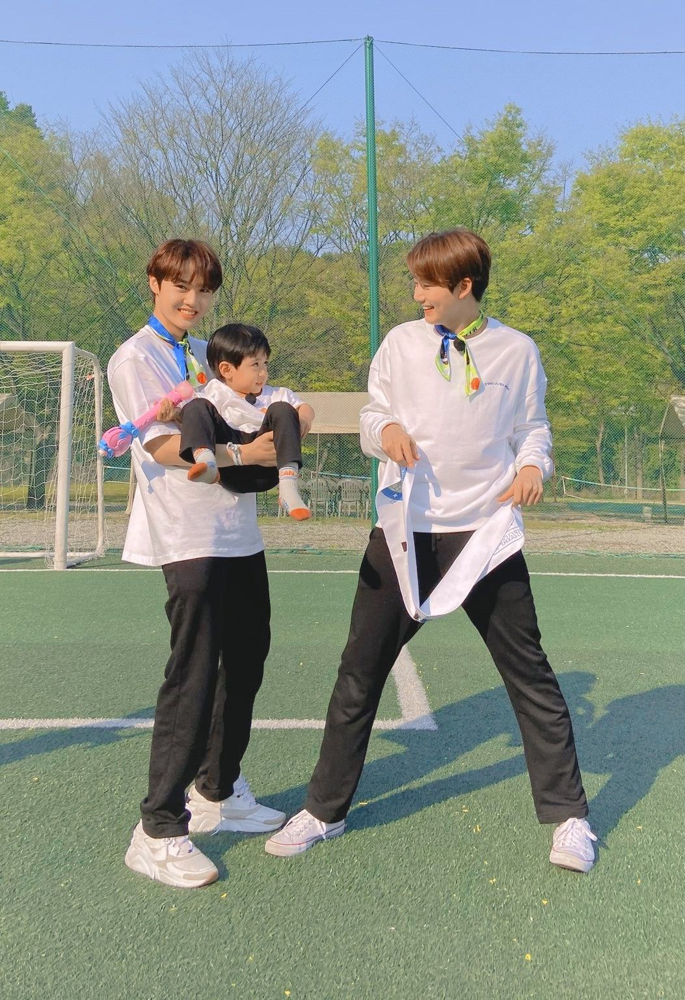
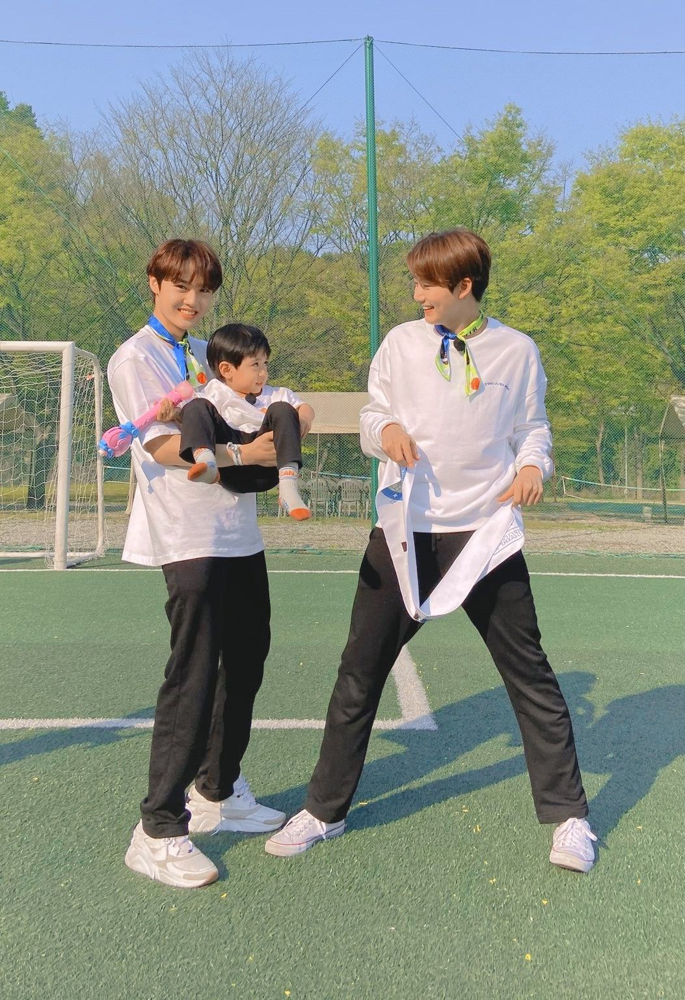
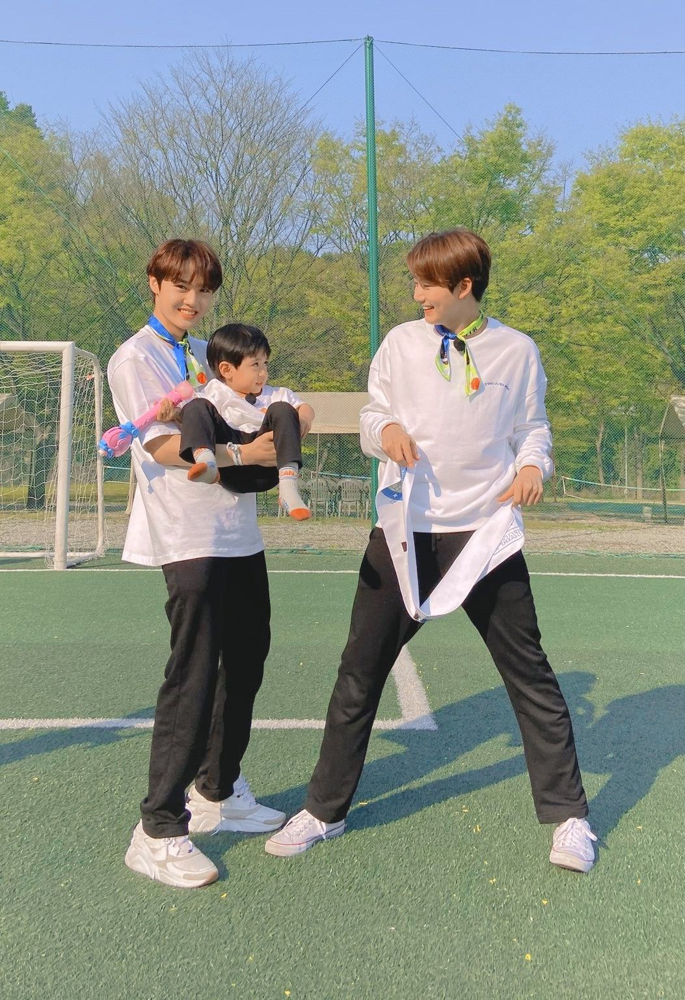

Boy Grup Naungan YG Entertaiment bentukan program survival "YG TREASURE BOX" yang dipilih langsung oleh Treasure Maker dan Produser utama Yang Hyunsuk dengan formasi awal 13 Member (Treasure 13). Berikut profile lengkapnya.
Hyunsuk dan Junkyu pernah mengikuti program survival Mixnine bersama dengan Gon CIX (Ex-Trainee YG)
Jaehyuk telah dicasnting oleh banyak agensi diantaranya; SM, JYP, CUBE, Woolim, Pledis, Yehua. dan pernah menolak YG kemudian menerima setelah casting ke 3 kalinya
Jeongwoo dan Junghwan sama-sama berasal dari Iksan
Junkyu dan Doyoung berada di Academy Dance yang sama
Jihoon, Yedam dan Doyoung pernah tampil di salah satu eps "StrayKids"
Asahi merupakan seorang Ikonic (Lucky Fanboy)
Doyoung memiliki alergi terhadap buah apel dan strawberry
Ibu Haruto adalah VIP (fans Bigbang)
Posisi Haruto ketika audisi adalah Vocal
Ejaan Asli Jeongwoo adalah Jung woo tapi dia typo ketika diawal masuk YG
Junghwan adalah seorang aktor cilik
Junkyu merupakan model cilik sehingga punya banyak foto kecil
Some Photos

Ginama?? udah terpikat dengan ketampanan dan kelucuan treasure? STAN STREASURE YOROBUN!!!


 
